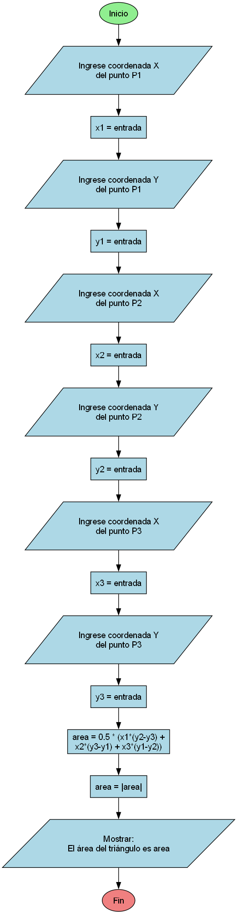

PS 1.12: Calcular Área de Triángulo (Java)
Construya un programa en Java que, dado como dato las coordenadas de un triángulo, calcule su área.
Diagrama de flujo
Datos del Problema
- Dato de Entrada: x1, y1, x2, y2, x3, y3
- Descripción de Datos (Tipos en Java): x1, y1, x2, y2, x3, y3:
double(coordenadas de los 3 vértices) - Salida Esperada: Área del triángulo
Requisitos de Implementación (Java)
- Crear una clase principal (ej.
PS_1_12) - Usar
java.util.Scannerpara leer las coordenadas - F
órmula:
area = 0.5 * |x1(y2-y3) + x2(y3-y1) + x3(y1-y2)| - Usar
Math.abs()para valor absoluto - Imprimir el área con
System.out.println()
Ejemplo de uso esperado
(Ejecución 1: Triángulo (0,0), (4,0), (0,3)) Ingrese las coordenadas de los vértices del triángulo: P1 - Coordenada X: 0 P1 - Coordenada Y: 0 P2 - Coordenada X: 4 P2 - Coordenada Y: 0 P3 - Coordenada X: 0 P3 - Coordenada Y: 3 El área del triángulo es: 6.0